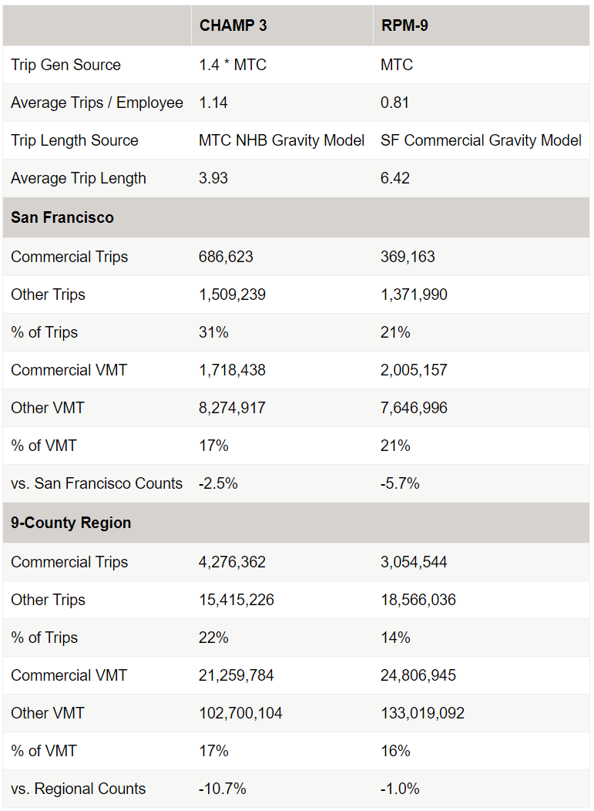

Activity Demand Models¶
DaySim Activity-Based Demand Model¶
SF-CHAMP 6.0 uses the DaySim demand model. DaySim is an open-source travel demand microsimulation package that is used by several regional planning organizations in their travel demand models. DaySim consists of a series of discrete choice models that represents different components of travel decision-making. Each model is estimated and calibrated with observed travel survey data. This is an abridged list of DaySim submodels and some of the primary factors that influence choice-making in each model, roughly presented in order:
Work location model. Major sensitivities include: full or part-time status, distance, income, sex, and quantity of jobs by industry sector
School location model. Major sensitivities include: student age, distance, and school enrollment in base year by school level
Auto ownership. Major sensitivities include: number of drivers in household, numbers of household members of various status (child, student, worker, retired, etc.), household income, commute/school logsum benefit of car ownership (how much would car ownership improve work commute or school accessibility), distance to transit stops, parking prices near home, amount of food, retail, service, and medical employment near home
Person day pattern. Major sensitivities include: worker/student status, income, auto ownership, sex, age, activity purpose, land use attributes, family composition (e.g. has children in household)
Tour destination models (work, other, subtour). Major sensitivities include: full-time worker status, part-time worker status, student status, employment density, is/is not usual workplace, distance, activity purpose, day pattern, home/non-home based, income, auto availability, other land use attributes
Tour mode models (work, school, work-based, escort, other home based). Major sensitivities include: travel time, transit fares, tolls, parking cost, income, age, sex, auto ownership, household size, children in household, origin and destination land use attributes, stops in tour pattern by activity purpose
Tour time models (work, school, other work-based). Major sensitivities include: tour mode, activity purpose, day pattern (other tours in day, tour order, etc.), worker and student status, income
Intermediate stop generation model. Major sensitivities include: tour purpose, number of tours in day pattern, time of day, duration of tour time window, sex, age, household type, tour mode, worker status, children in household status, position of stop within tour
Intermediate stop location model. Major sensitivities include: stop activity purpose, travel time available, distance, income, tour purpose, tour mode, land use attributes (employment density, etc.),
Trip mode model. Major sensitivities include: tour mode, activity purpose, travel time, transit fares, tolls, parking cost, auto ownership, household size, household composition (children in household), land use density, intersection density, age, income
Trip time model. Major sensitivities include: student status, age, minutes available in schedule, remaining stops to make, activity purpose
Work location model. Major sensitivities include: full or part-time status, distance, income, sex, and quantity of jobs by industry sector
School location model. Major sensitivities include: student age, distance, and school enrollment in base year by school level
Auto ownership. Major sensitivities include: number of drivers in household, numbers of household members of various status (child, student, worker, retired, etc.), household income, commute/school logsum benefit of car ownership (how much would car ownership improve work commute or school accessibility), distance to transit stops, parking prices near home, amount of food, retail, service, and medical employment near home
Person day pattern. Major sensitivities include: worker/student status, income, auto ownership, sex, age, activity purpose, land use attributes, family composition (e.g. has children in household)
Tour destination models (work, other, subtour). Major sensitivities include: full-time worker status, part-time worker status, student status, employment density, is/is not usual workplace, distance, activity purpose, day pattern, home/non-home based, income, auto availability, other land use attributes
Tour mode models (work, school, work-based, escort, other home based). Major sensitivities include: travel time, transit fares, tolls, parking cost, income, age, sex, auto ownership, household size, children in household, origin and destination land use attributes, stops in tour pattern by activity purpose
Tour time models (work, school, other work-based). Major sensitivities include: tour mode, activity purpose, day pattern (other tours in day, tour order, etc.), worker and student status, income
Intermediate stop generation model. Major sensitivities include: tour purpose, number of tours in day pattern, time of day, duration of tour time window, sex, age, household type, tour mode, worker status, children in household status, position of stop within tour
Intermediate stop location model. Major sensitivities include: stop activity purpose, travel time available, distance, income, tour purpose, tour mode, land use attributes (employment density, etc.)
Trip mode model. Major sensitivities include: tour mode, activity purpose, travel time, transit fares, tolls, parking cost, auto ownership, household size, household composition (children in household), land use density, intersection density, age, income
Trip time model. Major sensitivities include: student status, age, minutes available in schedule, remaining stops to make, activity purpose
See Daysim’s Standard Technical Documentation for model system workflow, component documentation, and more.
Distributed Values of Time¶
The Phase 2 models were enhanced to include value of time distributions, rather than using fixed average values of time for each income class. In a mode choice model, value-of-time is not an explicit model coefficient, but implied from the ratio of the time coefficient and the cost coefficient. Therefore, there are three possible ways to incorporate a distributed value of time in a mode choice model—using a distributed time coefficient, using a distributed cost coefficient, or using distributed values of both.
The utility of money should vary with income, as well as with personal circumstances. It makes sense that a single person earning $60,000 per year would have a different utility for money than someone trying to raise a family of four on the same income. It also makes sense for those two individuals to have very different utilities of time, where one traveler may need to make it to his child’s soccer game, and another may have no specific time restrictions. From a practical standpoint, however, it is not clear what greater effects varying the time coefficient might have, particularly on the user benefit calculations required for New Starts analysis. Since it is safer to vary only the cost coefficient, that approach is taken for RPM-9.
Structurally, a work value of time and a non-work value of time are selected for each individual when the work location choice model is run. These values of time are written with the person record in the output file. All remaining models read these values of time and use them in combination with the in-vehicle time coefficient, to calculate the cost coefficient for the model being run. In this way, each individual has a single value of time for work and a single value of time for non-work that are consistent across all models.
The method for determining value of time (in 1989 dollars) for each person is:
Divide the household income by the number of full-time household workers plus ½ the number of part-time household workers. If there is less than one worker in the household, do not divide. The result is the household income per worker.
Divide the household income per worker by 2,080 hours to get the average wage rate per worker for that household.
Construct a log-normal value of time distribution where the mean is ½ the wage rate for that household, and the sigma is 0.25. Draw from this distribution to obtain the work value of time.
Calculate the non-work value of time as 2/3 the work value of time.
Impose a minimum of $1/hour and a maximum of $50/hour.
For persons less than 18 years old, impose a maximum of $5/hour.
An option is provided in RPM-9 to use the standard, average values of time for each income group. Table 1 shows a comparison of these averages, and the average of the distributed values. The model was calibrated using the distributed values of time, so it is not clear what effect the standard values would have on the calibration results.
Table 1: Comparison of Average Distributed Values of Time with Non-Distributed Values
Purpose |
Income Range |
Non-Distributed VOT (1989 $/hr) |
Distributed VOT (1989 $/hr) |
|---|---|---|---|
Work |
$0-30k |
$3.61 |
$3.66 |
$30-60k |
$10.82 |
$8.19 |
|
$60k+ |
$18.03 |
$16.53 |
|
Non-Work |
$0-30k |
$2.40 |
$2.49 |
$30-60k |
$7.21 |
$5.46 |
|
$60k+ |
$12.02 |
$11.45 |
No changes were made to the handling of distributed values of time in CHAMP 4.3 Fury. See Distributed Values Of Time for more or to edit.
Auxiliary Demand Models¶
In addition to the personal household travel predicted by the core models, a few additional markets contribute significantly to the total travel in the region. These markets include visitors, internal-external and external-external trips, and commercial vehicles, and all are modeled using existing methods.
Airports¶
The project team considered the significance of San Francisco, San Jose and Oakland airports as unique trip attractors in the Bay Area. Ultimately, the team decided not to treat airports in any special way at this time.
Non-Resident Travel¶
See Non Resident Travel for more or to edit.
The CHAMP 3 visitor model was carried over to RPM-9. The model uses the MTC external trip table, and the MTC light, medium, and heavy truck trip tables. Initially, the model also used the MTC very light truck trip table, but that was later replaced with a simple commercial vehicle model, as described below.
MTC provides commercial trip tables for four classes of vehicles: heavy, medium, light and very light. The heavy, medium and light vehicles are the trucks typically associated with freight movements. For the year 2000, these classes account for about 275,000 trips in the 9-county area. In its most recent round of model calibration, MTC also introduced a very small truck trip table containing about 3.1 million trips. These very small trucks are any four tire vehicles associated with a commercial movement. In part, they include travel associated with: parcel deliveries, mail routes, service calls, attendance at meetings, traveling salesmen, pizza deliveries, taxi cabs, and any other travel beyond a commute associated with commercial activity. MTC borrowed their very small commercial vehicle trip rates from the Maricopa Association of Governments (MAG), and they are consistent with the Quick Response Freight Manual (QRFM) rates. MTC distributed the trips using their non-home based trip distribution models. Knowing that the traffic associated with these trips is significant, but lacking any local observed data quantifying the commercial travel, this approach seems reasonable.
During the CHAMP 3 calibration, the MTC very light truck trip tables were factored up by 40% such that the modeled highway volumes would better match traffic counts. This scaling was only done after the amount of personal travel had been increased to the maximum amount deemed reasonable, and all other options had been exhausted. It was known that the amount of travel found in the BATS 2000 added up to significantly less than the amount of travel implied by the traffic counts, and commercial traffic was one important difference between the two. In subsequent applications of CHAMP 3, however, planners observed what they judged to be an excessive amount of very short commercial vehicle trips in downtown San Francisco. Therefore, RPM-9 sought to mitigate this issue to the extent possible, while still generating enough vehicles on the highway networks.
After considering several alternatives, the ultimate decision was to continue using the MTC heavy, medium and light truck trip tables, but develop a simple commercial vehicle model to replace the MTC very light truck trip table. The commercial vehicle model is an aggregate model, starting from the QRFM trip rates, shown in Table 6. These rates result in the same number of trips as are found in the MTC trip tables, and 40% fewer than in CHAMP 3.
Table 2: Very Light Commercial Vehicle Trip Rates
Socio-Economic Category |
Trip Rate |
|---|---|
CIE Employment |
0.437 |
Households |
0.251 |
MED Employment |
0.437 |
MIPS Employment |
0.437 |
PDR Employment |
0.938 |
RETAIL Employment |
0.888 |
VISITOR Employment |
0.4 |
The trips are then distributed using a gravity model and the friction factors shown in Figure 5. The friction factors were calibrated to produce what the analysts thought was a reasonable trip length distribution for commercial vehicle trips. Table 2 shows this trip length distribution, which are significantly longer than the MTC trip lengths, producing more vehicle miles traveled with fewer trips.
To understand the effect of these changes, the share of commercial and other trips and vehicle miles traveled are presented in Table 7. The values and comparisons to traffic counts are approximate, because they are from an intermediate calibration run prior to the final calibration.
Table 3: Comparison of Very Light Commercial Vehicle Trips in CHAMP 3 and RMP-9
Area Pricing Logic¶
The non-resident trip tables are split into toll, non-toll, and already paid, just like the residents. The toll/no-toll choice uses simple logit models, where the value of time is $15/hour for external and visitor trips, and $30/hour for commercial trips.
In these aggregate models, it is not possible to explicitly track which trips have paid and have not. Instead, the cost coefficients are divided by the average number of times that the same traveler is expected to enter the pricing area in a day. Lacking any observed data, the model uses the following assumptions:
External travelers enter once per day,
Visitors enter twice per day, and
Commercial vehicles enter twice per day.
Note that these entries are only the number of inbound trips, assuming that exiting the pricing area is free. Following the choice of the toll or no-toll alternative, the toll trips are split into two trip tables for those who have to pay the toll in assignment, and those who have already paid it. This split is done by dividing by the number of entries per day.